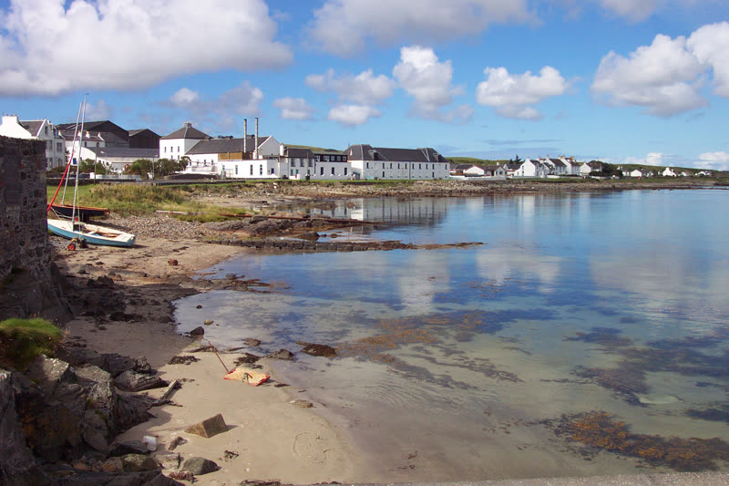
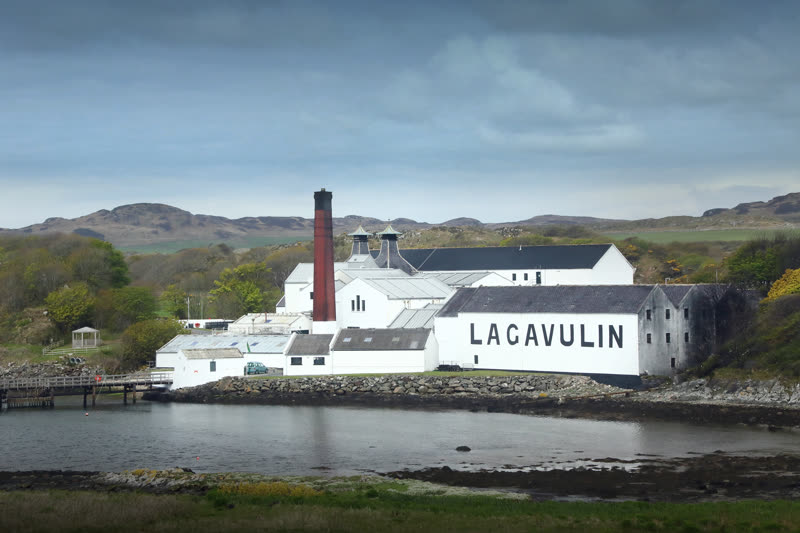
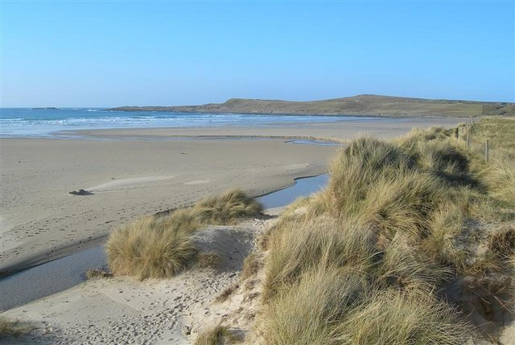
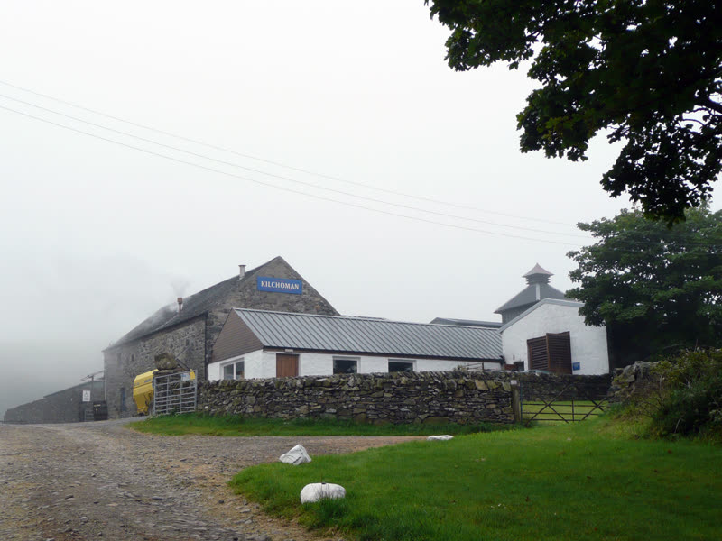

Fly to a remote island of 3,000 people. White sand beaches, crashing Atlantic waves, and the most legendary distilleries on earth. Base in Port Charlotte.
📸 Key Sights

Bruichladdich Distillery

Lagavulin & Castle Ruins

Machir Bay Beach

Kilchoman Farm Distillery
Day Trips (all within 30 min)
- ⭐Bruichladdich — the main event. Warehouse Experience or Black Art tasting
- 🌾Kilchoman — most remote farm distillery in Scotland
- 🏰Lagavulin — tasting with castle ruins on the cove
- 🏖️Machir Bay & Saligo Bay — wild Atlantic beaches
- ✝️Kildalton Cross — 8th century Celtic high cross
🥃 Distillery Guide
# Distilleries:10 on the island
Unpeated options:3 of 10
Avg Laddie-like:★★★¼
Avg Discovery:★★★½
Bruichladdich
The one Trevor loves. Unpeated, barley-terroir focused, coastal. The original.
Cozy ★★★★Discovery ★★★Laddie-like ★★★★★Unpeated ★★★★★
Kilchoman
Farm distillery — they grow, malt, distill, and bottle on-site. Peated but elegant.
Cozy ★★★★★Discovery ★★★★★Laddie-like ★★★Unpeated ★
Bunnahabhain
The unpeated rebel of Islay. Remote, seals on the rocks, barley-forward like Bruichladdich.
Cozy ★★★★Discovery ★★★★Laddie-like ★★★★
🧔 Jon: Coziest pubs in Scotland, every distillery is a sleeper hit. No castles or megaliths though.
🥃 Trevor: The mothership. Bruichladdich Black Art, Kilchoman farm-to-bottle. Whisky heaven, full stop.
🌺 Jess: Wild Atlantic beaches, seals & sea eagles — but limited variety beyond coastal walks on a small island.
✈️ Getting there from LAX: LAX → Glasgow (connect via London/Amsterdam) + overnight in Glasgow + Loganair to Islay (45 min, 1-2 flights/day). ~20-24hr total, 3 flights. Loganair books up fast in July — limited seats. Early July (before English school holidays) is the quietest window.
| 🥃 Whisky | ★★★★★ |
| 🪨 Ancient Sites | ★★★★★ |
| ⛰️ Scenery | ★★★★★ |
| 🧔 For Jon | ★★★★★ |
| 🥃 For Trevor | ★★★★★ |
| 🌺 For Jess | ★★★★★ |
| 🤫 Quiet (more ★ = fewer crowds) | ★★★★★ |
| 🦟 Midge-free (more ★ = fewer) | ★★★★★ |
★ = more is better across all categories. "Quiet" means fewer tourists — more ★ = more peaceful.